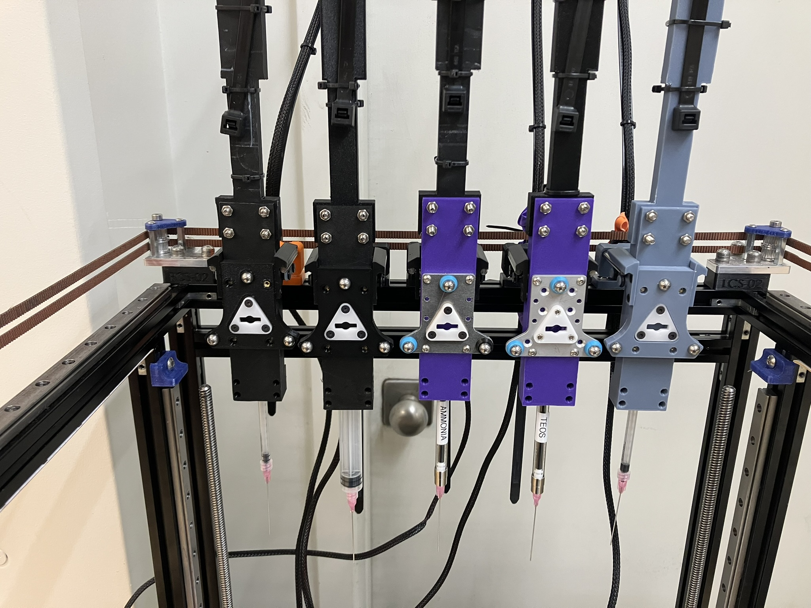
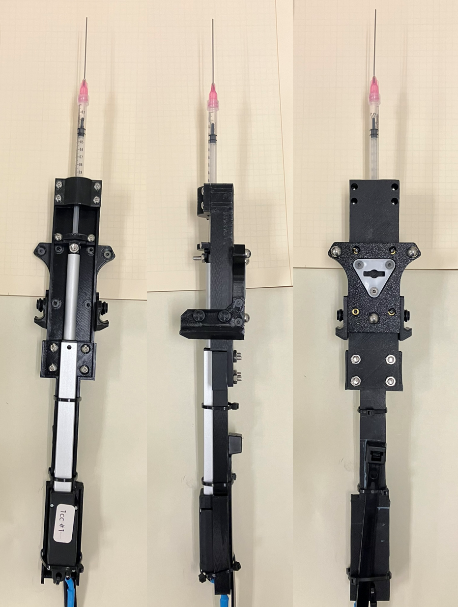

Digital Pipette HTTP Syringe Tool
The Digital Pipette HTTP Syringe tool is one adaptation of the Digital Pipette tool developed by Naruki Yoshikawa et. al to the Jubilee platform. This adaptation adds a Jubilee tool plate and parking post wings to the tool and adapts the control interface to integrate with the science-jubilee library. This tool uses a linear servo actuator mounted in a 3D printed frame to drive a disposable plastic syringe. The servo is controlled through a raspberry pi, which exposes an HTTP interface to interact with the science-jubilee library client for this tool. This tool is similar in principle to the other Jubilee syringe tool. This tool uses linear servo motors instead of stepper motors and leadscrews. This makes this version lighter, easier to build, and extensible to a multi-tool setup with fewer duet boards. The stepper motor version will provide more force for handling viscous liquids.

Pros of this tool
Low cost liquid handling - this tool can be built for a per-tool cost of around $80USD, with some additional control hardware costs spread across multiple tools. This is much cheaper than the OT2 Pipette tool.
Swappable liquid-contacting parts. Everything that comes into contact with liquids and their vapors is fast and easy to swap out, so you don’t need to worry about damaging expensive equipment with incompatible solvents. You do still need to worry about solvent compatibility for safety and experimental fidelity reasons.
Choice of syringe tips - this tool uses syringes with Luer-lock tips, which is the standard interface for syringe tips. This gives you access to a wide range of tips/needles for various purposes. Sharp, blunt, flexible, stout, long, short - there are endless options out there.
Potentially faster batch dispensing compared to traditional pipette tool, especially for bulk liquid quantities
No headspace volume. This tool allows you to remove all air from the plunger-barrel-liquid system. This results in better performance with volatile liquids (no headspace evaporation leading to dripping and inaccurate dispense) and better performance when injecting liquids into sealed containers, such as when using pre-slit silicone septa to manage evaporation
Cons of this tool
lower accuracy and precision. Performance is lower than the OT2 pipette for water.
No disposable pipette tips. This tool places liquid to be transferred in direct contact with the syringe barrel. To perform multi-liquid transfers, multiple tools or a thorough rinse process are needed.
Parts list
This Jubilee adaptation of the tool uses a single control box to manage several individual syringe tools. The linear servos are driven off of raspberry pi GPIO pins, so in practice the number of tools will be limited by how many you can fit on a Jubilee. 5 is likely the maximum on a standard Jubilee V2. All printed parts are printed in PLA.
For each tool
You will need one set of these parts for each indivdual tool you want to build.
Parts to purchase
Description |
Quantity per tool |
Vendor 1 |
Est. total cost |
|---|---|---|---|
Linear servo actuator, Actuonix L16-100-63-6-R |
1 |
$70 |
|
M12 4-pin connector |
1 |
$4.50 per tool (sold in 4 pack) |
|
M12 4-pin panel mount socket |
1 |
$4.25 per tool (sold in 4 pack) |
|
M3 brass heat set inserts |
12 |
$4.30 |
|
22g Hookup wire |
18 feet |
Any brand is fine |
$ 3? |
1/8” expandable wiring sleeve |
6ft |
\( 1 (\)13/100 foot roll) |
|
Misc. M3 and M4 hardware |
varies |
$2ish |
|
Jubilee tool vitamins (wedge plat and tool balls) |
1 set |
Filastruder |
|
Butt splice connectors for 22g wire |
many |
$0.30/ea |
Syringes:
The current printed parts are designed to hold either a 1cc or 10cc syringe. Specifically, they are designed around the ones listed. If you are using a different volume or brand, you may need to re-design the mounting interface. At the time of writing, both of the above listed options are out of stock, so shifting to a more reliable vendor may be worthwhile. There is also a version of the 1cc syringe tool designed to work with a Hamilton glass syringe (PN 81320).
Tips: We use a variety of blunt-tip luer lock tips with our syringe tools. We like these 20gauge, 50mm blunt tips for general liquid handling as they are stout enough to pierce silicone septa and long enough to aspirate liquid from the bottom of a 20cc scintillation vial.
Parts to print
For 1cc tool:
Part Name |
Quantity |
Link |
Print notes |
|---|---|---|---|
Tool platform lower 1cc |
1 |
||
Barrel cover 1cc |
1 |
||
Plunger holder 1cc |
1 |
Mind your supports and print orientation |
|
Plunger holder clamp 1cc |
1 |
Mind your supports and print orientation |
Analogous versions for the hamilton glass syringe are also available in the github repo.
For 10cc tool:
Part Name |
Quantity |
Link |
Print notes |
|---|---|---|---|
Tool platform lower 10cc |
1 |
Should be printed flat side down |
|
Barrel cover 10cc |
1 |
||
Plunger holder 10cc |
1 |
Mind your supports and print orientation |
|
Plunger holder clamp 0cc |
1 |
Mind your supports and print orientation |
Control hardware
You will need one control module for each Jubilee you want to use the HTTP syringe tool on.
Parts to buy
Description |
Quantity per control box |
Vendor 1 |
Est. total cost |
Notes |
|---|---|---|---|---|
Raspberry pi 4 8GB |
1 |
$75 |
This is flexible. You may need to change GPIO pin assignments in config if you use a different model. We use an 8GB, you may get away with less but we haven’t tested. |
|
Power distribution block |
1 |
$11 |
||
6V DC power supply |
1 |
$11 |
You probably have one sitting in your box of cables somewhere |
|
Panel mount barrel jack receptacle |
1 |
$1.5 (Sold in 8 pack) |
Any other quick-connect plug for DC power will work here |
Parts to print
This control support module is designed to fit onto the Autonomous Formulation Lab modular frame system. For use with Jubilee, modifying this box to mount to the back panel of Jubilee would make more sense.
Part Name |
Quantity |
Link |
Print notes |
|---|---|---|---|
Control support module |
1 |
||
Lid |
1 |
Assembly Instructions
Put it together. It should look like the pictures when you are done. Better instructions to come.

Wiring
To wire the servo motor, you need to extend the wires it comes with, connect the power wires to a 6V DC power supply, and connect the signal wire to a GPIO pin on a raspberry pi.
Extend the servo motor leads to an appropriate length (~6 feet) using the 22g hookup wire, butt splices, and heat shrink. Use the same colored wires to extend them, or note how the extensions connect. Optional but strongly suggested: Place the expandable wiring sleeve over the wires to keep things tidy.
Connect the wires to the M12 connector. The DC+ wire (red) should go in pin 1, ground (black) in pin 2, and white (signal) in pin 3.
Solder leads onto the M12 panel mount socket. Ideally use the same wire colors as for the servo motor wiring. Match the pins on the socket to the pins on connector. The panel-mount connected signal wires should terminate with female jumper wire connectors to plug into the pi. The easiest way to do this is to sacrifice a pre-wired jumper wire.
Install the through-panel connectors into the control module box.
Select GPIO pins to use for the syringe control. Note which pin is used for which syringe tool, you will need this to configure the control software later. Here is one diagram to do this. Note that you want the GPIO pin number, not the pin ordering number. (ie, GPIO23, not pin 16).
Wire the inside of the control box as shown in the picture. The power wires for the connector get connected to the power rail, and the signal wires plug into pi GPIO pins. Connect a ground wire between a ground screw on the power rail and a ground pin on the pi. Connect the power rail to the separate 6V power supply, ideally using a through-panel barrel connector.
Software configuration
The control software for the pipette tools runs as a separate service on the raspberry pi. The science-jubilee http_syringe tool python module that you load in your notebook to control the tool makes requests to this service to aspirate and dispense volumes. The digital_pipette_server manages the positioning of the servo motors to dispense appropriate amounts of liquid. The science-jubilee ‘tool’ object still manages all the jubilee state, such as positioning the syringe tip in the correct location. Thus, all configuration related to volumetric calibration is done on the raspberry pi, and all tool offset configuration is still done on Jubilee. To configure the http_syringe tool, you need to provision the pi and install the digital_pipette server on it, configure the science-jubilee http_syringe tool to talk to the server, and run a calibration to determine appropriate syringe end limits and calibration constants.
Install and configure the digital_syringe_server library. The readme of this repository walks you through this process. This should be installed on the raspberry pi used to control the syringes.
The rest of the syringe control and configuration will take place on the computer you use to control your jubilee. This could be but is not necessailly the same raspberry pi used to control the syringes
Create local configuration files for your syringe tools in the
science_jubilee/src/science_jubilee/tools/configsdirectory. There is an example template there. This configuration contains the URL of the server and the name of the syringe. The name in the config file must match the name you gave your syringe in the server configuration on the raspberry pi.
Example format:
{
"url": "http://192.168.1.5:5000",
"name": "example_syringe"
}
Installing on Jubilee
You will need to install the tool on Jubilee. This requires setting parking post positions and tool offsets.
Tip
If you are using a long syringe needle/tip, a slightly bent or misaligned needle can cause the tool offset at the tip of the tip to be different from the offset at the base of the tip. This can cause issues when using small labware or septa. To mitigate this, you can first set the tool offset of the syringe tool without a tip installed, using the luer-lock fitting of the syringe barrell as the reference point. Then, install the syringe tip and carefully bend the needle until the tip is aligned with your tool offset reference point.
Using the tool
Stop and double check that you have the following before proceeding:
A network connection between the computer running science-jubilee and the syrine tool raspberry pi
The
digital_syringe_serverservice up and running on your raspberry pi, with default configurations setThe syringe tool(s) physically installed on your Jubilee, with parking post positions and tool offsets configured.
Bring up a jupyter notebook and connect to your science-jubilee in the usual manner:
jubilee = Jub.Machine(address='192.168.1.2')
Import the syringe tool module:
from science_jubilee.tools import HTTPSyringe as syringeInstantiate a syringe object. Here we will do this from the config file we defined above. The
from_configmethod takes two arguments: A Jubilee tool index and the path to the config file.syringe_tool = syringe.HTTPSyringe.from_config(1, "../../science-jubilee/src/science_jubilee/tools/configs/10cc_syringe.json")If this times out due to a network connection error, then you likely either a) have a network configuration isssue preventing you from connecting to the raspberry pi, or b) have an error with the digital_syringe_server configuration.
Load the syringe object onto the science-jubilee machine object in python:
jubilee.load_tool(syringe_tool)The syringe tool requires another initiation step (also called ‘load’) before it can move. Because the servo motor doesn’t have a homing mechanism, it needs to be told where it is and what liquid amount it is filled with before it can transfer liquids. Due to how this was implemented, this ‘load’ step also needs to be done before the tool will move at all. For now, we’ll use placeholder values of pulsewidth = 1500 and volume = half of total capacity. For a 1cc syringe, the load command is:
syringe_tool.load_syringe(1500, 500)Now you can manually move the syringe. This is done by setting the ‘pulsewidth’ for the servo, as described in the digital_pipette_server docs. First, set the syringe pulsewidth to 1500:
syringe_tool.set_pulsewidth(1500, s = 200)The first argument is the (integer) pulsewidth value in the range [1000, 2000] to set the pulsewidth to, and the ‘s’ optional parameter is the speed, in uL/s, to move at. Note this command subverts the position and volume tracking that underpins the volumetric aspirate and dispense functions of the tool. Use set_pulewidth sparingly, and re-run the load_syringe procedure after adjusting the syringe with it. Note also that the pulsewidth is an absolute position for ther servo.
When you run this command for the first time, the syringe should move. If it doesn’t:
The syringe may already be at pulsewidth = 1500. Try another value like 1600.
If you are not getting any errors, check the logs for the
digital_pipette_serverservice on the pi. You should see some evidence of the pulswidth for the relevant syringe tool being set. If not, investigate your configurations.If the logs indicate a pulsewidth was set, check that 1) the servo signal wire is plugged into the same GPIO pin as is specified in the config file on the raspberry pi for that syringe tool (note again that the GPIO pin number is different from the raspberry pi pin position number), and 2) All wiring to the servo is correct, and the servo is getting power.
Congrats! You have a working syringe tool now.
Final configuration
Next you need to correctly set the emtpy and full position pulsewidths.
Find the ‘empty’ position pulsewidth by slowing moving the plunger down by increasing the pulsewidth in subsequent calls to the
set_pulsewidthmethod. Stop when the plunger is all the way down and record this value. Be careful not to damage the servo, syringe, or frame; move slowly as you approach bottom out.Find the ‘full’ position by moving the plunger up (by decreasing the pulswidth value) until the plunger is aligned with the maximum capacity marking on the syringe barrel.
Update the appropriate config file on the raspberry pi with the correct full and empty positions.
Restart the digital_pipette_server server for the changes to take effect.
Loading the syringe with liquid
The simplest way to load liquid into the syringe tools is:
Move the plunger all the way to the empty position:
syringe_tool.set_pulsewidth(syringe_tool.empty_position - 1)Place the tip/needle of the syringe in your liquid by holding the liquid container up to the parked syringe.
Draw up a syringe full of liquid by moving the syringe to the full position:
syringe_tool.set_pulsewidth(syringe_tool.full_position + 1)Note the -1/+1 modifiers are due to a positioning check that prevents the tool from moving all the way to the full/empty position.Optional: Deadspace in the tip likely resulted in a small volume of air being drawn up. This may be a problem for volatile liquids where headspace evaporation will cause dripping, or for dispensing into sealed vials that become pressurized on fluid injection. This air can be purged by the following procedure. Note that this will eject liquid from the syringe tip. An appropriate containment device such as a septa-sealed vial or absorbent paper towel should be used to contain the liquid. Wear eye protection.
Remove the syringe tool from the Jubilee parking post and invert it so the syringe tip points up.
Get all the air bubbles to the top of the syringe near the needle. It may be necessary to knock the side of the syringe tool frame with something solid like a screwdriver to dislodge any bubbles that stick to the sides.
Cover the syringe tip with the above described containment mechanism
Hold the syringe so your hands are clear of any moving parts
Eject a volume greater than the volume of the contained air from the tip of the syringe. Generally moving the syringe by 150 pulsewidth points is sufficient, ie:
syringe_tool.set_pulsewidth(syringe_tool.full_position + 150)This should eject all the air. If any remains, repeat for a larger dispense volume.
Alternatively, you can manage deadspace by reserving a buffer volume during transfers that is not dispensed. This is not directly implemented currently. To do this you would estimate the deadspace volume typical of a syringe/needle/liquid combination, then always aspirate your target dispense volume + this volume buffer + a little extra when you do a liquid transfer. Then dispense the desired dispense volume into your target location and either return the buffer volume to the stock vial, or dispose of it.
Re-load the syringe tool to update the volume and position. Note it is critical you get the current pulsewidth correct here. The volume should be a rounded-down estimate of the volume read off the side of the syringe barrel.
syringe_tool.load_syringe(current_pulsewidth, current_volume)
Now you are ready to calibrate your syringe
Gravimetric calibration
To perform accurate liquid handling, you will need to calibrate the syringe tool using a gravimetric calibration. This is done by dispensing water into a vial using a known pulsewidth, determining the mass and thus volume of the dispensed water, then take an average to determine the conversion factor of pulsewidth change per uL. It is suggested to do at least 5 dispenses at each pulsewidth change in [50, 100, 250, 500]
Pre-weigh a sufficient number of vials (And record the weights and keep track of which vial is which)
Load your syringe with water
For each vial, dispense water by advancing the syringe by the appropriate pulsewidth amount. For example, if you are on the pulsewidth change = 50 step of the calibration and your syringe is currently at pulsewidth = 1230, advance the syringe by 50 points with the command
syringe_tool.set_pulsewidth(1270).After each dispense, weigh the post-dispense vial
This notebook is set up to run the calibration procedure.
To process the resulting data into a calibration constant:
Calcuate the mass of each dispense by subtracting the dry vial weight from the post-dispense weight
Convert the mass to a volume using the density of water
Calculate a uL per microsecond value for each dispense by dividing the volume delivered by the pulsewidth change
Calculate an average uL per uS value for the experiment by averaging all the values from step 3. They should all look similar, if they don’t something may be wrong.
Invert the uL per uS value to get the uS per uL calibration constant
Update the calibration file for the syringe tool on the raspberry pi with the new calibration constant, and reboot the pi.
You now have a calibrated syringe! It is recommended to follow up with a volumetric validation, following the same procedure as above but with volume dispenses instead of pulsewidth steps, to verify the accuracy and precision of your syringe.
Transferring liquids
To transfer liquids with the Digital Pipette syringe, use the aspirate and dispense methods. These function identically to the aspirate and dispense methods for the OT2 pipette.
To aspirate (pick up) a volume of liquids from a location:
syringe_tool.aspirate(volume, location)
And to dispense into a destination:
syringe_tool.aspirate(volume, location)
License
The original Digital Pipette tool, and this derivative work, are licensed under CC4.0